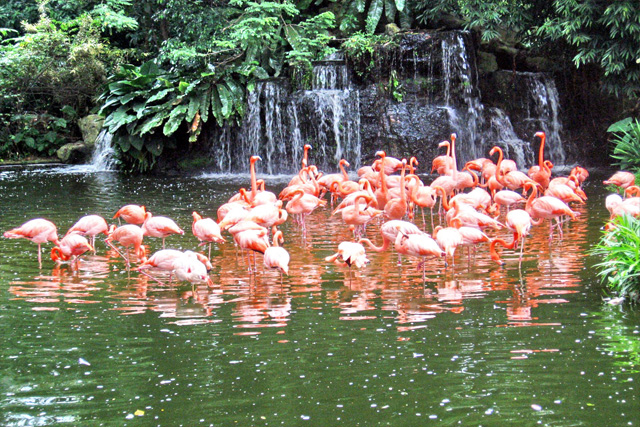

Valley of Fire

World-renowned for its 40,000 acres of bright red Aztec sandstone, Vally of Fire State Park contains ancient petrified trees and polygraphs dating back thousands of years. During the winter a pleasant visit, the summer brings the brutal desert heat. Come and hike, picnic, or look at the variety of beautiful rocks, plants, and animals.
Red Rock Canyon

Continuing on with our red theme, Red Rock Canyon keeps the adventure going with scenic drives, hiking, and plants. Biking and climbing are permitted as well! Keep exploring the ancient history of near Central American culture. Check out all of the education opportunities such as topography, wildlife, and fauna.
Springs Preserve

Keep going green in the desert by visiting the Springs Preserve. The beautiful plants and animals preserved here are timeless and worth spending time learning about every single one. But on top of this, the archology of the area that used to rule this now vapid landscape will surprise you!
Clark County

Nevada has no shortage of compelling landscapes, and Clark County is no
different. Mt. Charleston and skiing are just 45 minutes away. Lake Mead National Recreation
Area, located 30 miles southeast of Las Vegas, caters to boaters, swimmers, fishermen, hikers,
wildlife photographers, and roadside sightseers. Clark County has your gambling, but it has much
more
around it!
Flamingo Wildlife
Flamingo Wildlife is something in Vegas you likely end up walking right by during the course of your vacation. Free to view, high visibility, and generally interesting, this wildlife habitat has an animal you likely have never seen in person, flamingos! You can also see exotic fish and turtles there as well, so take a quick stop through the hotel.
Blackrock Canyon

Blackrock Canyon isn't unique to Nevada, spanning 800000 acres of land. But, it does expand across states. The massive lands are managed by the department of interior and are host to miles of trails, narrow gorges, and hot natural springs. There are even other opportunities to take historic wagon rides and camping. But be careful, the barren land will not have you connect to society if that's what you crave.